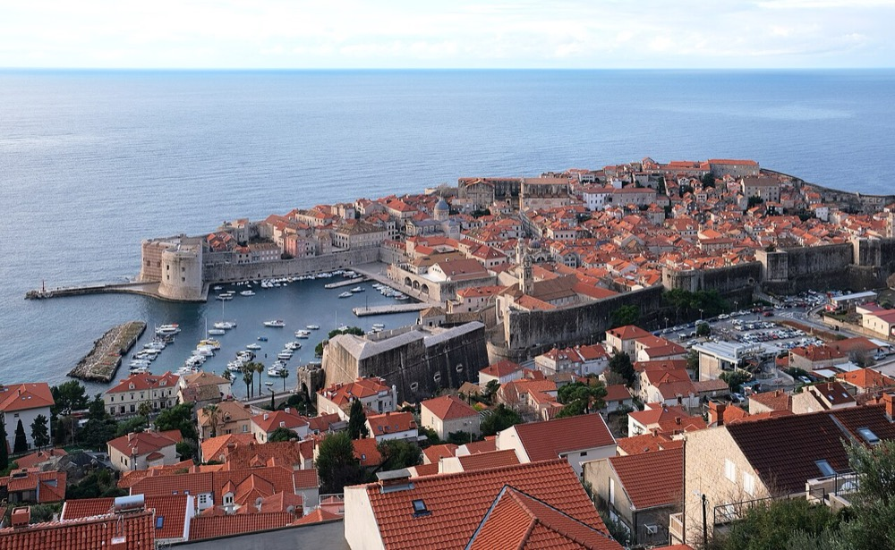

Хорватия

Хорватия — Адриатика в лучшей форме: стены Дубровника, вода прозрачная как стекло и тысяча островов в придачу. Стены идут по периметру старого города — два километра, сорок минут; к открытию, в 8 утра, — без жары и без толп, вид с красными крышами и яхтами внизу. Внутри всё компактно: улица Страдун отполирована пешеходами столетий, улочки уходят вверх ступеньками, и вы рано или поздно потеряете направление — тут теряются с четырнадцатого века, это местный жанр. За городом — Плитвицкие озёра: шестнадцать водопадов на один парк, деревянные настилы прямо над бирюзовой водой; приходите к открытию и идите против толпы. Острова: Хвар с лавандой и виноградниками, Корчула — по легенде, родина Марко Поло, Лопуд — вовсе без машин. Лодка к островам дешевле с пристани, чем через отель, а вечером — местное вино на террасе: с видом, без спешки и с честной ценой. Хорватия не кричит о себе — и в этом её хорошая форма.
Что знать перед поездкой
- Стены Дубровника — к открытию, в 8 утра
- Лодка к островам — дешевле с пристани
- Вечером — местное вино на террасе: дешевле и с видом на море